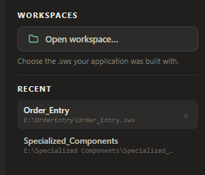
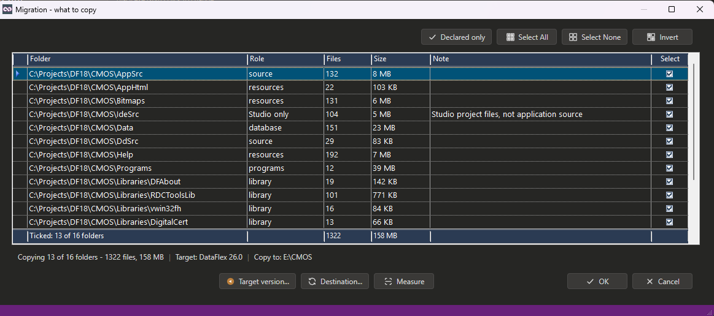
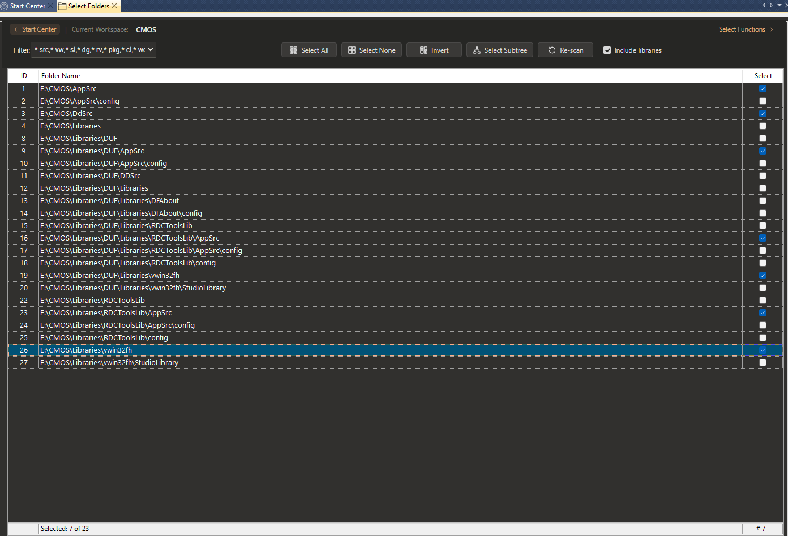
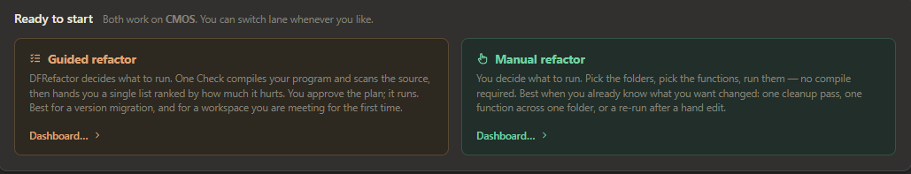
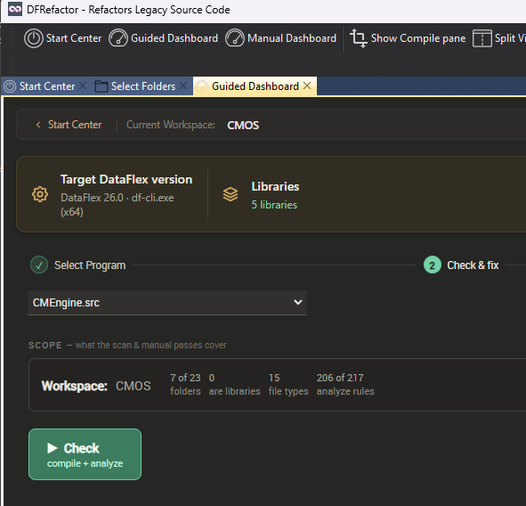
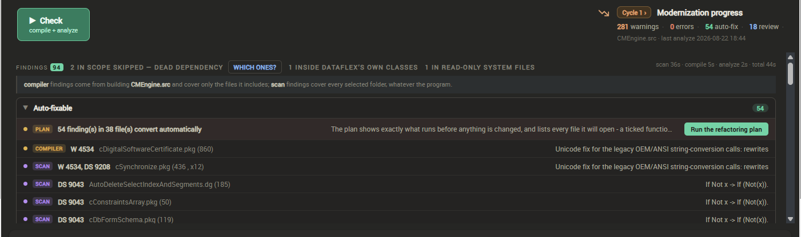
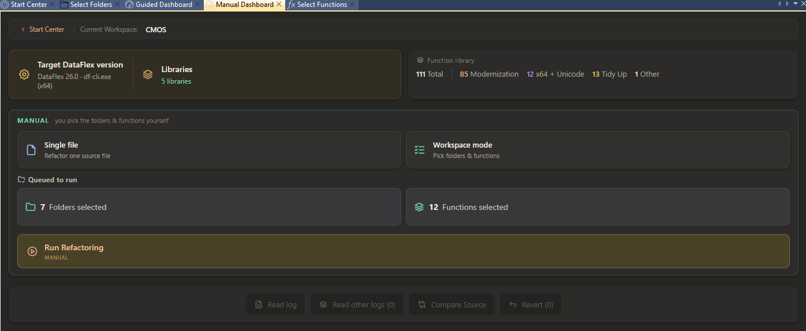
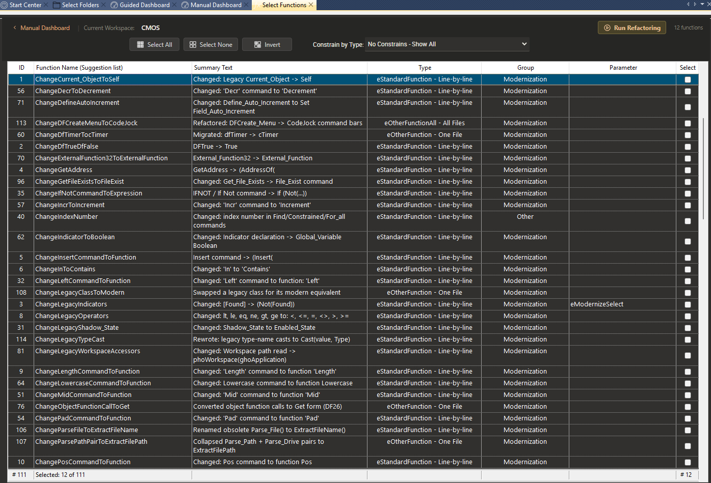
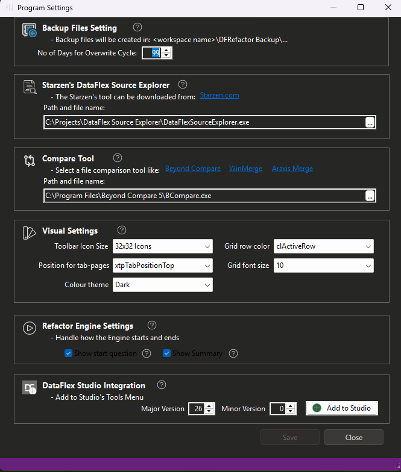

How to use the Program
This page walks through a complete refactoring session, in the order the program expects it. The guided route walks the same order for you, and the tour on the Start Center shows each step on screen.
Before anything else: back up or check in your source. The built-in backup mechanism is a safety net, not a substitute for version control. You are responsible for ensuring your source is safely preserved before any refactoring run. The author of this software makes no guarantee that the built-in backup mechanism always works as intended.
Step 1 — Choose the DataFlex version you are moving to
Everything else depends on this choice, which is why it comes first. You select a compiler, and the version is read from it. That version decides which refactoring functions your workspace actually needs — a workspace moving to DataFlex 26 has different work to do than one moving to 22.
Step 2 — Open the workspace
DFRefactor works on a workspace (.sws file). The workspace home folder is the root for the backup directory.

Open one from the Start Center with Open workspace..., pick it from the RECENT list, or drag an .sws file from Windows Explorer onto the application window. Any .sws file from the workspace will do; the DataFlex version stamped on the file does not matter. Right-click a recent entry to remove it.
The workspace is named in the header of every view, so a run cannot be aimed at the wrong one by accident.
Step 3 — Copy the workspace, and work on the copy
Do this before anything touches your source. Migration - what to copy takes a copy of the workspace and gives it its own .sws for the version you are moving to, so the original keeps building exactly as it always did while you work on the copy.

Each folder is listed with the Role DFRefactor worked out for it, its file count and size. Declared only ticks just the folders the workspace itself declares; Measure totals what the current ticks would copy. Target version... and Destination... set what the copy is for and where it goes.
Step 4 — Match the libraries, and the packages
A copied workspace still points at the libraries the original used. Libraries shows them as an editable list, so each entry can be pointed at the version you are moving to. From DataFlex 26 a workspace can also carry packages, which need the DataFlex 26 JSON workspace format — an INI workspace has to be converted first.

The line under the heading says what the version column means and how many entries are behind the target. See Libraries and Packages.
Step 5 — Set the scope
Select Folders chooses which folders take part. The first time a workspace is opened, DFRefactor scans the home folder and fills this list; Select All, Select None, Invert and Select Subtree set the ticks, Re-scan rebuilds the list, and Include libraries decides whether the workspace's libraries are offered at all. Selection is saved automatically.
Filter: on the same view chooses which file types. Pick a preset (for example *.src;*.vw;*.sl;*.dg;*.rv;*.pkg;*.cl) or type your own wildcard combination. Every file under the selected folders and their sub-folders that matches one of the extensions is included.

Step 6 — Guided, or manual

Guided refactor decides what to run for you: one Check, one findings list ranked by how much it hurts, and you approve the plan before anything is written. Manual refactor lets you pick the folders and the functions yourself, with no compile required — best when you already know what you want changed. They are two routes to the same tools, not two different programs, and you can switch lane whenever you like.
Step 7 — Check
One Check does two things at once. It scans your selected source folders for obsolete constructs, then compiles the program with the compiler you selected as the target and analyzes what comes back: every error and warning is matched, where possible, to the refactoring function that fixes it. Both lanes land in the same list.

The SCOPE line above the button states exactly what the pass will cover before you press it. See Test Compile and Modernization Analyzer.
Analyze Source is the other half of discovery, and can also be run on its own. It reads the source for obsolete constructs that still compile — so the compiler never mentions them, and no amount of compiling would ever find them. A workspace that compiles cleanly can still have plenty for it to find.
Step 8 — Read the list, approve the plan
The findings arrive as one list, ordered by what to do first: what the tool can fix for you, then what breaks the build, then what needs a human decision, then what has to be migrated by hand. Each row is tagged COMPILER or SCAN so you can see which lane found it.

Run the refactoring plan opens the plan for you to read before anything is written — which refactoring functions will run, what each one is set to, and every file each will open. Untick anything you are not ready for. The plan is saved with the workspace, so a session can be closed and picked up later.
Expect to go round more than once: fixes unlock further findings. Every lap is recorded, so the count going down is visible from one pass to the next — see Modernization Progress.
The manual route: choosing functions yourself
The Manual Dashboard offers Single file to refactor one source file, or Workspace mode to pick folders and functions. It shows what is queued to run, and the run's own results below.

Select Functions lists every refactoring function; tick the ones to include.

- Function Name (Suggestion list) — type any part of a name to jump to it.
- Summary Text says what the function changes, in one line.
- Constrain by Type: restricts the display to one function type at a time.
- Type shows how source is handed to the function: one line at a time, a whole file as a string array, or all selected files at once. See Refactoring Functions.
- Group says what the function is for — Modernization, Tidy Up, x64 + Unicode, or Other.
- Parameter — some functions take an extra value. Double-click the cell to choose one; hover to read what the values mean.
Run Refactoring starts the run. Large workspaces may take several minutes.
Two options change what a run does:
- Count Source Lines (only) — no functions are applied. DFRefactor counts non-blank, non-comment source lines across the current filter and folder selection. Studio-generated ActiveX/OCX code is excluded.
- Read Only — the selected functions run and the summary reports how many changes would have been made, but no file is written. Useful for sizing a change before committing to it.
After a run
Every file a run changes is copied first to a DFRefactor Backup folder in the workspace home folder, with sub-folders mirroring the folders being processed.
Overwrite cycle. Re-running against the same workspace inside the overwrite-cycle window (99 days by default) does not overwrite the existing backup, so the original source is preserved through a series of incremental runs. After the window expires, the next run creates fresh backups. The length is No of Days for Overwrite Cycle in Program Settings.

Compare Source shows what changed — in the editor, against that file's backup; from the dashboard, across the whole folder tree. It uses the comparison tool you name in Program Settings.
Revert opens Undo Refactoring, which moves backed-up files back to their original folders if you want the run reversed.